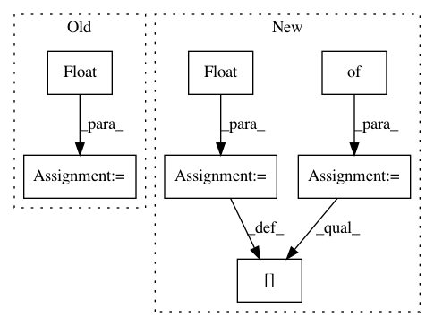

441a175deaa5812c086cdb8a3939d51d39f5a7ae,nussl/deep/train/trainer.py,Trainer,setup_loss,#Trainer#Any#Any#,89
Before Change
def setup_loss(self, loss_functions, output_target_map):
self.output_target_map = output_target_map
self.loss_dictionary = {
target: (loss_functions[fn.upper()].value(), float(weight))
for (fn, target, weight)
in self.options["loss_function"]
}
self.loss_keys = sorted(list(self.loss_dictionary))
@staticmethod
def build_model(model):
After Change
def setup_loss(self, loss_functions, output_target_map):
self.output_target_map = output_target_map
self.loss_dictionary = {}
for (_fn, target, weights) in self.options["loss_function"]:
if "PIT" in _fn.upper():
loss_fn = _fn.split(":")[1]
loss_fn = loss_functions[loss_fn.upper()].value()
fn = loss_functions["PIT"].value(loss_fn)
else:
fn = loss_functions[_fn.upper()].value()
self.loss_dictionary[target] = (fn, float(weights))
self.loss_keys = sorted(list(self.loss_dictionary))
@staticmethod
def build_model(model):
In pattern: SUPERPATTERN
Frequency: 4
Non-data size: 7
Instances
Project Name: interactiveaudiolab/nussl
Commit Name: 441a175deaa5812c086cdb8a3939d51d39f5a7ae
Time: 2020-01-26
Author: prem@u.northwestern.edu
File Name: nussl/deep/train/trainer.py
Class Name: Trainer
Method Name: setup_loss
Project Name: cmu-db/ottertune
Commit Name: 01b4ec3f531e07b8c4a32a13288c963ad8b4b843
Time: 2019-10-14
Author: dvanaken@cs.cmu.edu
File Name: server/website/website/db/base/parser.py
Class Name: BaseParser
Method Name: convert_dbms_metrics
Project Name: CellProfiler/CellProfiler
Commit Name: 6c12d3f40ae84d60ab1c74594a2291d684c0295e
Time: 2009-10-05
Author: thouis@1fc53939-2000-0410-845c-e8453a809027
File Name: pyCellProfiler/cellprofiler/modules/imagemath_simple.py
Class Name:
Method Name: add_image
Project Name: cmu-db/ottertune
Commit Name: 01b4ec3f531e07b8c4a32a13288c963ad8b4b843
Time: 2019-10-14
Author: dvanaken@cs.cmu.edu
File Name: server/website/website/db/myrocks/parser.py
Class Name: MyRocksParser
Method Name: convert_dbms_metrics